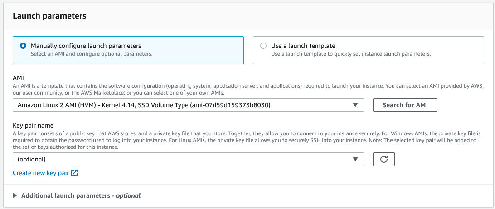

Spot Event Plugins - Spot Fleet Requests¶
Overview¶
A Spot Fleet Request defines a collection of Spot instances and the parameters with which they will be launched.
The Spot Event Plugin uses a separate Spot Fleet Request for each Deadline Group.
Note
Creating the Spot Fleet Requests¶
To create a Spot Fleet Request via the AWS Management Console:
Sign in to the AWS Management Console.
Click on Services at the top of the AWS Management Console, then click on EC2 under Compute.
In the EC2 panel, click Spot Requests in the sidebar under Instances, then click the Request Spot Instances button.
Select a Launch template for your AMI if you have created one (optional). Otherwise select the AMI that you created.
Warning
If using Launch Templates you must add the following key/value pair as a Tag in the Launch Template.
DeadlineTrackedAWSResource : SpotEventPluginFailure to add this Tag will result in EC2 Instances being launched that won’t be managed/monitored by the Resource Tracker if it’s enabled.
It’s possible that if this Tag is not included, EC2 Instances that can’t connect to the repository may become stuck and won’t shut themselves down.
It’s crucial that this Tag is added to prevent large overspends in your AWS Account that could otherwise be prevented by the Resource Tracker and other mechanisms.

Expand Additional launch parameters - optional.
Set Auto-assign IPv4 public IP to Enable
Set the IAM Instance Profile to the “DeadlineSpot*” IAM instance Profile you created earlier.
Set the Total target capacity value to the maximum number of Workers you would like in your Spot Fleet, and enable Maintain target capacity.
Set the IAM Fleet Role if you created a new one, otherwise leave it at its default.
If you would like to perform any custom setup when your instance starts up, you can add a User data script. See Render Farm Connectivity.
Download the Fleet Configuration by pressing the JSON Config button at the bottom of the page.
See the Spot Fleet Request Configurations topic for an example JSON configuration.
Note
Warning
The Spot Event Configuration Utility does not currently support using Multiple Regions

{kind=link}
{kind=link}
{kind=link}
{kind=link}
{kind=link}
{kind=link}
{kind=link}